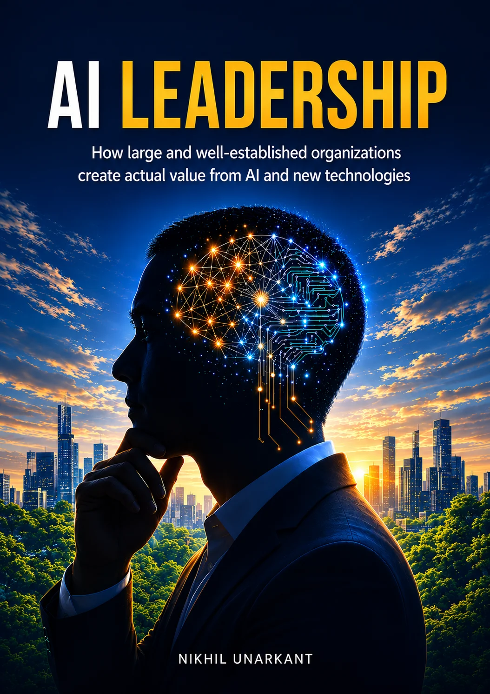

En insider fra en af Europas største virksomheder — med hænderne i både koden, projekterne og ledelsen bag AI. An insider from one of Europe's largest companies — hands-on with the code, the projects and the leadership behind AI.
Gennem de seneste 10 år har jeg hjulpet ledere — fra teamledere til direktion — med at gøre deres organisationer mere innovative. Jeg har arbejdet som innovationspartner, digital konsulent, projektleder og leder i en af Europas største virksomheder, Novo Nordisk.
For the past 10 years, I have helped leaders — from team leads to the executive level — make their organizations more innovative. I have worked as an innovation partner, digital consultant, project manager and manager in one of Europe's largest companies, Novo Nordisk.
Jeg har selv programmeret AI-løsninger, stået i spidsen for store AI-projekter og ledet tech- og innovationsteams. Jeg kender friktionerne mellem ny teknologi og veletablerede organisationer indefra.
I have programmed AI solutions myself, led large AI projects and managed tech and innovation teams. I know the frictions between new technology and well-established organizations from the inside.
Jeg er ikke den klassiske konsulent, der lever af ‘AI vil forandre din branche’-præsentationer. Jeg har en iværksætters mindset og evnerne til at navigere i store organisationer — og det handler ikke om flotte slides, men om kultur og konkret ledelsesadfærd.
I am not the classic consultant who makes a living from ‘AI will change your industry’ presentations. I have an entrepreneur's mindset and the skills to navigate large organizations — and it is not about fancy slides, but about culture and tangible leadership behaviour.
med AI, ledelse og strategiworking with AI, leadership and strategy
ledet en af verdens første GxP-validerede compliance-AI’er i pharmaled one of the world's first GxP-validated compliance AIs in pharma
ledet halvdelen i Novo Nordiskled half of it at Novo Nordisk
vært på ‘Creativity Boosters’ om kreativitet i erhvervslivet (Apple)host of ‘Creativity Boosters’ on creativity in business (Apple)
støttet Novos øverste ledelse i innovation og ny teknologisupported Novo's senior management in innovation and new technology
ledet flere teknologiteams, der bl.a. arbejdede med AIled several technology teams, including teams working with AI
i tech-ledelsein tech leadership
til bogen ‘AI Leadership’of the book ‘AI Leadership’
Min bog om, hvordan store og veletablerede organisationer skaber reel værdi med AI — ved at starte med kultur og ledelse frem for teknologi.
My book on how large and well-established organizations create real value with AI — by starting with culture and leadership rather than technology.

Er AI-kultur og ledelse på jeres dagsorden, så lad os finde ud af, hvordan jeg kan hjælpe.
If AI culture and leadership are on your agenda, let's figure out how I can help.
Kom i kontaktGet in contact